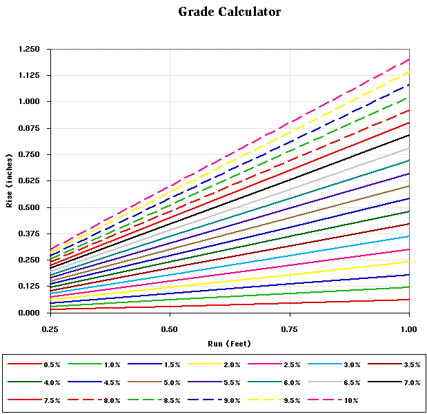
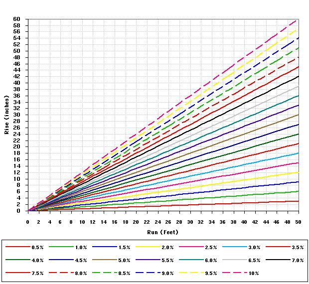

Grades are usually expressed as a percentage (Gradient) of XX Rise (vertical measurement) in XX Run (horizontal measure). Using three variations of this relationship, you can figure out whatever you need to know.If you need to figure out how much of a grade there will be between two points and a certain elevation change, divide the Rise by the Run and you will have the Gradient as a decimal percentage (.01 = 1%, .005 = .5%, etc.)
Gradient(%) = Rise / Run
A 1% grade then, is 1 inch Rise in 100 inches Run.If you need to figure out how much elevation change you can make for a specific gradient, multiply the Run by the Gradient. This will tell you the amount you can raise the track at that percent grade, given the length of track you have to create the grade.
Gradient(%) times Run = Rise
(100 inches Run * .01 Gradient = 1 inch Rise).If you have an elevation change to accommodate, and want to know how much length you need to fit that amount of Rise and hold to a certain percent Gradient, divide the Rise by the Gradient.
Rise divided by the Gradient(%) = Run
(1 inch Rise / .01 Gradient = 100 inches Run.)I made a couple of charts for quickly estimating the grades of your layout. The first one tells you the gradient for a rise in inches per foot (or part of a foot) of run. The second gives the rise / run relationship for up to ten feet. Find the Rise on the left, and the Run on the bottom. Where they intersect will tell you the Gradient, or read across from where the gradient and run intersect to find the Rise. Look at where the Rise and Gradient intersect and read down to the bottom for the Run needed.



If you have comments, suggestions on what you would like to see
or data you might like, you can email me at:
Rick Blanchard - rick@urbaneagle.com


--Back to da data.--